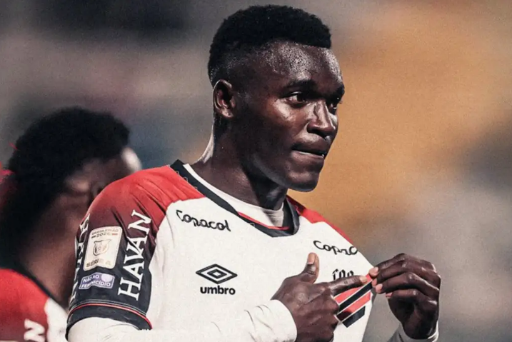
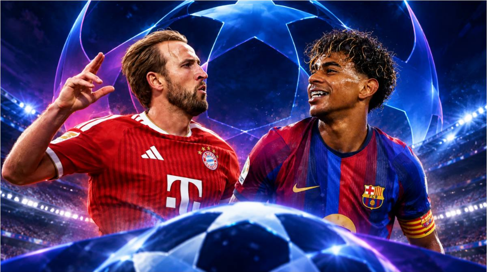
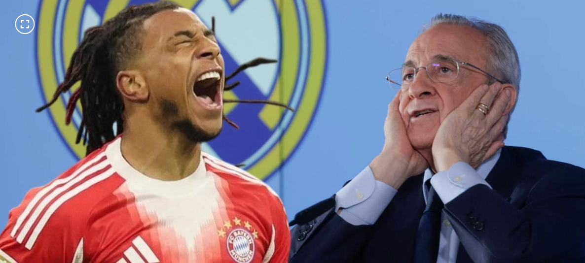
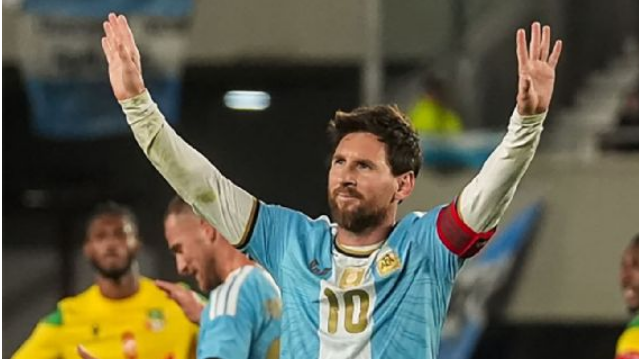

Noticias de Deportes

Kevin Viveros se afianza en la tabla de goleadores en Brasil: mire sus dos nuevos golazos
Kevin Viveros, delantero colombiano, volvió a ser protagonista con Athletico Paranaense y se consolidó como máximo goleador del campeonato brasileño. Sus números lo ponen por encima de las principales figuras ofensivas del torneo y ya le permitieron superar una marca histórica de Carlos Tevez.
Kevin Viveros sigue haciendo historia en Brasil. El delantero colombiano anotó dos goles este lunes 12 de octubre en la victoria 4-1 de Athletico Paranaense sobre Chapecoense, por la fecha 30 del Brasileirao. Su actuación, que incluyó una espectacular definición de taco, le permitió llegar a 21 anotaciones en el campeonato y ampliar su ventaja en la tabla de goleadores. El atacante de 26 años atraviesa el mejor momento de su carrera y se consolida como una de las principales figuras del fútbol brasileño.

Champions League 2026: Lamine Yamal y Harry Kane, a la caza de récords en la Jornada 2
La jornada 2 de la fase de liga de la Champions League 2026-27 comenzará este martes 13 de octubre con nueve partidos que pondrán nuevamente a prueba a varios de los principales clubes de Europa. La actividad arrancará con Lens-Sporting CP y Sabah-Slavia Praha a las 10:45 horas, tiempo del centro de México, mientras que los otros siete encuentros comenzarán a la 1 de la tarde.
Entre los principales atractivos aparecen Galatasaray-Barcelona, Atlético de Madrid-Manchester United y Viking-Bayern Munich, aunque también habrá encuentros importantes para equipos que buscan reaccionar después de perder en su debut, como Villarreal, Napoli, Inter de Milán y RB Leipzig.

Bayern Múnich lanza contundente advertencia al Real Madrid sobre el caso del francés Michael Olise
El conjunto bávaro se negó a escuchar cualquier oferta por una de sus grandes estrellas e intenta que Olise, cuyo contrato termina en 2029, amplíe su compromiso con el Bayern.
"Sobre los rumores con el Real Madrid durante el verano, puedo decir que estoy convencido de que el Bayern es un club que no se ve forzado a vender jugadores", dijo Herbert Hainer, presidente del Bayern, al diario Bild.

Messi: "Gracias Argentina por haber compartido conmigo todos estos años"
Lionel Messi le puso fin a su carrera en la Selección Argentina y, después de su gran discurso de cierre en el Estadio Monumental, habló dentro de sus primeras horas ya como exjugador de la Albiceleste.
"Gracias, Argentina, por haber compartido conmigo todos estos años. Para mí fue un orgullo enorme haber vestido esta camiseta y defenderla con el alma con todos mis compañeros", comenzó Leo Messi, quien rompió el silencio en una entrevista que publicó Adidas en sus redes sociales.
Además, sobre su trayectoria con la Albiceleste, se sinceró: "Me tocó perder y ganar, pero esta camiseta está por encima de cualquier cosa. Siempre pensé en darle una alegría a ustedes, al país. Gracias a Dios lo hemos conseguido y me voy satisfecho por haber cumplido".